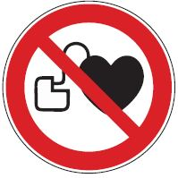
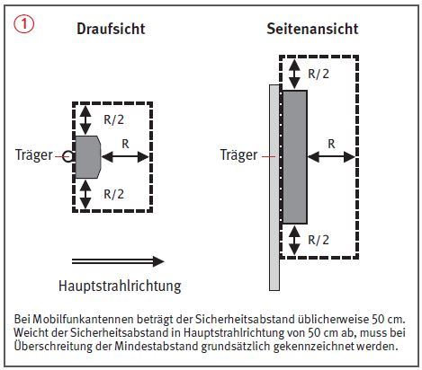
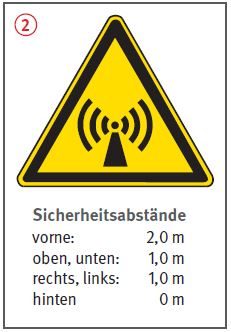

Elektromagnetische Felder können zu Gesundheitsschäden führen, überwiegend durch thermische Wirkungen.
Elektromagnetische Felder können die Funktion von medizinischen Geräten und von Implantaten stören.
Deshalb sind Personen, die solche medizinischen Geräte, Implantate oder andere beeinflussbare Fremdkörper im oder am Körper tragen (z. B. Herzschrittmacher, Stimulatoren, Defibrillatoren, Insulinpumpen, Prothesen, Schrauben) oder deren Wärmeregulierung krankheitsbedingt eingeschränkt ist, besonders schutzbedürftig.

Allgemeines
Bei Einhaltung der Abstandswerte der öffentlich zugänglichen Standortdatenbank der Bundesnetzagentur ist keine Gefährdung zu erwarten.
Bei Unterschreitung dieser Abstandswerte können Arbeiten sicher durchgeführt werden, wenn Schutzmaßnahmen ergriffen werden.
Bei Unterschreitung der Abstände durch besonders schutzbedürftige Personen ist die Durchführung dieser allgemeinen Schutzmaßnahmen ggf. nicht ausreichend.
Schutzmaßnahmen
Informationen zu Funkstandorten und Sicherheitsabständen über die Standortdatenbank oder, über den Auftraggeber, vom Netzbetreiber einholen.
Aufenthalt in der unmittelbaren Nähe von Antennen grundsätzlich vermeiden bzw. die Expositionszeit auf das Notwendige beschränken.
Zu Mobilfunkantennen ohne besondere Warnzeichen den Abstand von 1 m in Hauptstrahlrichtung und von 0,5 m in alle anderen Abstrahlrichtungen der Antenne einhalten .
Zu leistungsstärkeren Antennen mit einem Gefahrenhinweis des Netzbetreibers den dort konkret vorgegebenen Abstand einhalten .
Können Sicherheitsabstände nicht eingehalten werden, über den Auftraggeber beim Netzbetreiber das Abschalten bzw. die Minderung der Sendeleistung veranlassen.
In Abstimmung mit dem Netzbetreiber können geringere Abstände zugelassen werden, wenn eine bestimmte und genau festgelegte Expositionszeit nicht überschritten wird. In solchen Fällen Betriebsanweisung aufstellen und entsprechend unterweisen. Die Einhaltung dieser zulässigen Expositionszeit muss auch bei Unfällen oder Rettungseinsätzen gewährleistet sein.
Unterweisung zum Thema elektromagnetische Strahlung regelmäßig, mindestens jährlich, durchführen. Dabei auch auf die besondere Gefährdung von besonders schutzbedürtigen Personen eingehen, weil Informationen zu betroffenen Mitarbeitern nicht immer vorliegen.


Zusätzliche Hinweise bzgl. besonders schutzbedürftiger Personen
Die Auswirkungen auf besonders schutzbedürftige Personen bei der Gefährdungsbeurteilung berücksichtigen, besonders dann, wenn der Arbeitgeber über die Implantate oder Erkrankungen informiert ist.
In diesen Fällen auf Grundlage entsprechender Fachkunde mit Messungen oder Vergleichsrechnungen Einzelfallregelungen treffen.
Arbeitsmedizinische Vorsorgeuntersuchung anbieten, wenn regelmäßig in der Nähe von Funkanlagen gearbeitet wird.
Arbeitsmedizinische Vorsorge
Arbeitsmedizinische Vorsorge nach Ergebnis der Gefährdungsbeurteilung veranlassen (Pflichtvorsorge) oder anbieten (Angebotsvorsorge). Hierzu Beratung durch den Betriebsarzt.